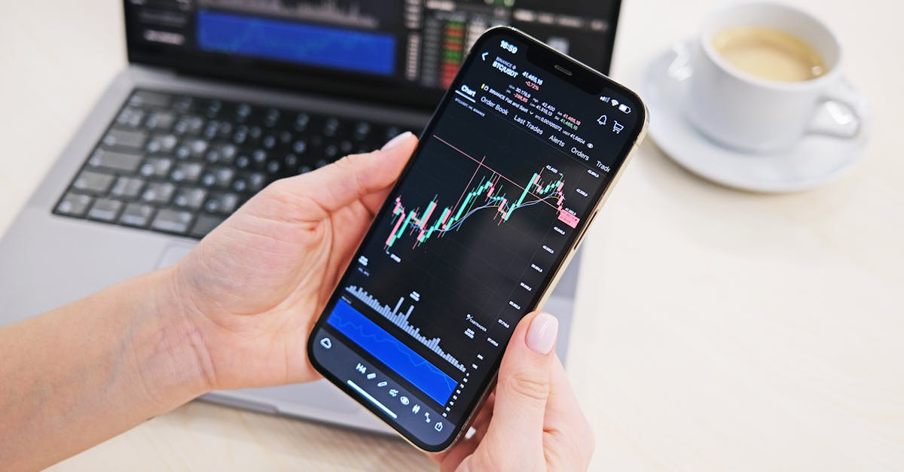

L'Inde à la Croisée des Chemins : Un Enjeu Mondial
Dans le tumulte géopolitique actuel, les paroles d'Amitav Ghosh, recueillies par Bloomberg, résonnent avec une acuité particulière : « Le problème de l'Inde dépasse toute figure politique individuelle. » Cette observation, loin d'être une simple anecdote, met en lumière les défis profonds auxquels le géant asiatique est confronté. L'Inde, nation aux mille visages, peine à définir son rôle sur la scène internationale, prise en étau par une concurrence continentale féroce émanant de la Chine, de la Russie et de l'Iran. Ce n'est pas seulement une question de leadership, mais une quête d'identité stratégique dans un monde en mutation.
👉 À lire : Or, IA et Géopolitique : Les Nouveaux Codes de l'Investissement
Cette incertitude, bien que spécifique à l'Inde, est symptomatique d'une reconfiguration plus large des équilibres mondiaux. Pour les investisseurs, et plus particulièrement ceux qui s'intéressent aux marchés des métaux précieux, cette situation n'est pas sans conséquence. Comment une telle instabilité peut-elle influencer la demande d'or, d'argent ou de platine ? Quelles opportunités et quels risques émergent de ce tableau complexe ? La volatilité est le maître mot, et dans un tel environnement, la capacité à anticiper et à réagir devient un avantage concurrentiel majeur. C'est ici que l'analyse fine et les outils technologiques de pointe trouvent toute leur pertinence, offrant une boussole dans ce labyrinthe géopolitique et économique.
👉 À lire : Or et Pétrole : L'IA décrypte la crise de l'Oruez
L'Inde, avec sa démographie colossale et son potentiel économique latent, est un acteur incontournable. Ses hésitations et ses ambitions se répercutent bien au-delà de ses frontières, affectant les chaînes d'approvisionnement, les flux de capitaux et, in fine, les marchés des matières premières. Comprendre les dynamiques internes et externes de l'Inde devient dès lors essentiel pour quiconque cherche à naviguer avec succès dans les eaux parfois troubles de l'investissement global.
L'Équation Géopolitique Indienne : Un Acteur en Quête de Rôle
L'analyse d'Amitav Ghosh souligne une réalité complexe : les « malheurs » de l'Inde ne sont pas la faute d'un seul homme, mais le reflet de défis structurels et d'une pression externe croissante. Historiquement non-alignée, l'Inde se retrouve aujourd'hui dans une position délicate, tiraillée entre des alliances traditionnelles et la nécessité de forger de nouvelles relations stratégiques. D'un côté, la Chine affiche une assertivité grandissante, notamment le long de la frontière himalayenne et dans l'océan Indien, remettant en question l'hégémonie régionale de l'Inde. De l'autre, la Russie, partenaire historique, est de plus en plus isolée sur la scène internationale, tandis que l'Iran, autre puissance régionale, complexifie encore le jeu diplomatique.
Cette quête d'un rôle clair sur la scène mondiale se traduit par une politique étrangère parfois ambivalente, jonglant entre les BRICS, le Quad (dialogue quadrilatéral de sécurité avec les États-Unis, le Japon et l'Australie) et ses propres intérêts nationaux. « L'Inde doit naviguer entre les écueils de la grande puissance et les sirènes de la neutralité, un exercice d'équilibriste qui pèse lourdement sur sa stabilité interne et sa perception externe », observe Dr. Anya Sharma, analyste en géopolitique asiatique. Cette instabilité perçue, qu'elle soit politique ou économique, a des répercussions directes sur la confiance des investisseurs et sur la valorisation des actifs traditionnellement considérés comme des valeurs refuges.
Dans ce contexte, les marchés émergents, et l'Inde en particulier, deviennent des baromètres sensibles des tensions mondiales. Les décisions prises à New Delhi, qu'elles concernent la politique commerciale, les investissements étrangers ou les alliances militaires, peuvent créer des ondes de choc qui se propagent à travers les marchés financiers. Pour les acteurs du marché des métaux précieux, comprendre ces dynamiques n'est pas un luxe, mais une nécessité absolue pour identifier les moments propices à l'investissement ou, au contraire, à la protection du capital.
L'Or, Baromètre de l'Incertitude Géopolitique en Inde
L'or, par sa nature même, a toujours été le refuge ultime en période d'incertitude. L'Inde, en tant que deuxième plus grand consommateur d'or au monde, joue un rôle pivot dans la dynamique de ce marché. Les troubles géopolitiques, qu'ils soient internes ou régionaux, ont un impact direct sur la demande indienne d'or et, par extension, sur les prix mondiaux. Lorsque l'économie locale est soumise à des pressions, que la roupie s'affaiblit ou que les tensions frontalières avec la Chine s'intensifient, la population indienne a tendance à se tourner vers l'or comme protection contre l'inflation et l'instabilité.
Les fêtes religieuses et les mariages sont des moteurs traditionnels de la demande d'or en Inde, mais les facteurs macroéconomiques et géopolitiques exercent une influence croissante. Une dégradation des relations avec la Chine, par exemple, peut-elle provoquer une fuite vers l'or ? Absolument. Les investisseurs institutionnels et les particuliers indiens perçoivent l'or non seulement comme un actif culturel, mais aussi comme un bouclier financier.
« L'or en Inde n'est pas qu'un simple métal ; c'est une assurance contre les caprices de la politique et de l'économie, un ancrage dans la tempête » affirme un économiste de la Banque centrale indienne (fictif).
Cette demande structurelle, combinée aux flux d'investissement mondiaux, rend le marché de l'or particulièrement sensible aux développements indiens. Une croissance économique ralentie, des pressions inflationnistes persistantes ou une politique budgétaire incertaine peuvent exacerber la demande locale. Pour les traders de métaux précieux, surveiller de près les indicateurs économiques indiens et les tensions géopolitiques de la région n'est pas une option, mais une stratégie fondamentale pour anticiper les mouvements de prix et capitaliser sur les opportunités.

Les Métaux Précieux au-delà de l'Or : Diversification Stratégique
Si l'or capte souvent l'attention, d'autres métaux précieux comme l'argent, le platine et le palladium méritent une considération attentive, surtout dans le contexte géopolitique indien. L'Inde, avec son ambition de devenir une puissance manufacturière et technologique, est un acteur émergent dans la demande de ces métaux industriels. L'argent, par exemple, est essentiel dans l'électronique, la photographie et, de plus en plus, dans les panneaux solaires, un secteur où l'Inde investit massivement. Le platine et le palladium, quant à eux, sont cruciaux pour l'industrie automobile (convertisseurs catalytiques) et pour les technologies émergentes.
Les défis géopolitiques de l'Inde peuvent indirectement affecter ces marchés. Des tensions régionales pourraient perturber les chaînes d'approvisionnement, augmenter les coûts de transport ou freiner les investissements dans les industries consommatrices de ces métaux. « La diversification dans les métaux précieux n'est plus un luxe, mais une nécessité stratégique pour les portefeuilles qui cherchent à se prémunir contre les chocs régionaux et mondiaux », souligne un gérant de fonds spécialisé dans les matières premières (fictif). La volatilité de ces marchés, souvent plus prononcée que celle de l'or, offre des opportunités mais exige une analyse plus fine et une réactivité accrue.
La dépendance de l'Inde vis-à-vis des importations de ces métaux la rend vulnérable aux fluctuations des prix mondiaux et aux perturbations de l'offre. Par exemple, des sanctions ou des troubles dans les principales régions productrices de palladium (comme la Russie ou l'Afrique du Sud) peuvent avoir un effet d'entraînement sur les industries indiennes. Comprendre ces interconnexions complexes est fondamental. Pour les traders, cela signifie surveiller non seulement les fondamentaux de l'offre et de la demande, mais aussi les indicateurs géopolitiques qui peuvent soudainement redéfinir la valeur de ces actifs.
L'IA : Boussole dans la Tempête des Marchés Émergents
Dans ce paysage d'incertitudes géopolitiques et de marchés des métaux précieux complexes, l'Intelligence Artificielle (IA) émerge comme un outil indispensable. Les marchés émergents comme celui de l'Inde sont par nature volatils, influencés par une multitude de facteurs : politiques, économiques, sociaux et même climatiques. Pour un trader humain, assimiler et analyser en temps réel l'ensemble de ces données – des déclarations politiques aux rapports économiques, en passant par les mouvements de troupes ou les annonces de sanctions – est une tâche herculéenne, voire impossible.
C'est là que la puissance de calcul et d'analyse de l'IA prend tout son sens. Un agent IA peut scruter des milliers de sources d'information simultanément, identifier des corrélations subtiles entre des événements apparemment sans lien, et détecter des signaux faibles bien avant qu'ils ne soient apparents à l'œil humain. Imaginez un système capable d'évaluer l'impact potentiel d'une déclaration diplomatique indienne sur le cours de l'argent en quelques millisecondes. C'est la promesse de l'IA dans le trading des métaux précieux.
« L'IA ne remplace pas l'intuition humaine, elle l'augmente de manière exponentielle. Elle permet de transformer le bruit du marché en signaux clairs, offrant un avantage décisif dans les environnements les plus complexes comme les marchés des métaux précieux influencés par la géopolitique indienne » explique Dr. Marc Dubois, spécialiste en trading algorithmique (fictif).
De la prédiction des mouvements de prix basés sur l'analyse de sentiments des actualités, à l'optimisation des stratégies de trading pour minimiser les risques liés aux chocs géopolitiques, l'IA offre une capacité d'adaptation et une rapidité d'exécution inégalées. Elle permet de réagir instantanément aux nouvelles, d'ajuster les positions et de protéger les portefeuilles dans un monde où chaque seconde compte. Pour les investisseurs cherchant à capitaliser sur les opportunités offertes par les marchés des métaux précieux, tout en gérant les risques inhérents à des régions comme l'Inde, l'IA n'est plus une option futuriste, mais un impératif stratégique.

Conclusion : Naviguer l'Incertitude avec Stratégie et Technologie
L'Inde, dans sa quête d'un rôle prépondérant sur la scène mondiale, est confrontée à des défis géopolitiques complexes et à une concurrence continentale acharnée. Les analyses d'Amitav Ghosh résonnent comme un rappel de la profondeur de ces enjeux, qui dépassent largement les personnalités politiques pour toucher à la structure même de la nation. Cette situation, loin d'être un simple fait d'actualité, a des implications directes et profondes pour les marchés financiers mondiaux, et en particulier pour le secteur des métaux précieux.
L'or, l'argent et les autres métaux précieux continuent de prouver leur valeur en tant que refuges et instruments de diversification dans un monde en constante mutation. Leur demande, qu'elle soit culturelle, industrielle ou purement spéculative, est intrinsèquement liée aux aléas géopolitiques et économiques des grandes puissances, l'Inde en étant un exemple éloquent. Comment les investisseurs peuvent-ils non seulement survivre, mais prospérer dans un tel environnement ? La réponse réside dans une combinaison de compréhension approfondie des dynamiques macroéconomiques et géopolitiques, et l'adoption d'outils technologiques de pointe.
L'Intelligence Artificielle représente une avancée majeure, offrant une capacité inégalée à analyser des volumes massifs de données, à identifier des tendances cachées et à exécuter des stratégies de trading avec une efficacité et une rapidité que l'humain seul ne peut égaler. Dans le contexte des marchés des métaux précieux, où chaque décision peut être impactée par un événement inattendu en Inde ou ailleurs, l'IA n'est pas un gadget, mais une boussole essentielle. Elle permet de transformer l'incertitude en opportunité, le risque en rendement potentiel, en fournissant une vision claire et des actions précises dans la tempête des marchés. L'avenir de l'investissement stratégique réside dans cette synergie entre une analyse humaine éclairée et la puissance d'exécution de l'IA.